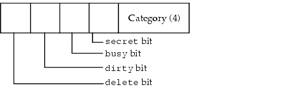

|
This chapter describes how to work with databases using Palm OS® managers.
• The Data Manager manages user data, which is stored in databases for convenient access.
• The Resource Manager can be used by applications to conveniently retrieve and save chunks of data. It's similar to the Data Manager, but has the added capability of tagging each chunk with a unique resource type and ID. These tagged data chunks, called resources, are stored in resource databases. Resources are typically used to store the application's user interface elements, such as images, fonts, or dialog layouts.
• File Streaming Application Program Interface can be used by applications to handle large blocks of data.
IMPORTANT: To access data or resources on secondary storage (such as expansion cards), you use a different set of APIs. See Chapter 7, "Expansion," for more information.
The Data Manager

A traditional file system first reads all or a portion of a file into a memory buffer from disk, using and/or updating the information in the memory buffer, and then writes the updated memory buffer back to disk. Because Palm Powered™ handhelds have limited amounts of dynamic RAM and use nonvolatile RAM instead of disk storage, a traditional file system is not optimal for storing and retrieving Palm OS user data.
Palm OS accesses and updates all information in place. This works well because it reduces dynamic memory requirements and eliminates the overhead of transferring the data to and from another memory buffer involved in a file system.
As a further enhancement, data in the Palm Powered handheld is broken down into multiple, finite-size records that can be left scattered throughout the memory space; thus, adding, deleting, or resizing a record does not require moving other records around in memory. Each record in a database is in fact a Memory Manager chunk. The Data Manager uses Memory Manager functions to allocate, delete, and resize database records.
This section explains how to use the Data Manager by discussing these topics:
• Records and Databases
• Structure of a Database Header
• Using the Data Manager
Records and Databases
Databases organize related records; every record belongs to one and only one database. A database may be a collection of all address book entries, all datebook entries, and so on. A Palm OS application can create, delete, open, and close databases as necessary, just as a traditional file system can create, delete, open, and close a traditional file. There is no restriction on where the records for a particular database reside as long as they all reside on the same memory card. The records from one database can be interspersed with the records from one or more other databases in memory.
Storing data by database fits nicely with the Palm OS Memory Manager design. All heaps except for the dynamic heap(s) are nonvolatile, so database records can be stored in any heap except the dynamic heap(s) (see "Heap Overview" in the "Memory" chapter). Because records can be stored anywhere on the memory card, databases can be distributed over multiple discontiguous areas of physical RAM.
Accessing Data With Local IDs
A database maintains a list of all records that belong to it by storing the local ID of each record in the database header. Because local IDs are used, the memory card can be placed into any memory slot of a Palm Powered handheld. An application finds a particular record in a database by index. When an application requests a particular record, the Data Manager fetches the local ID of the record from the database header by index, converts the local ID to a handle using the card number that contains the database header, and returns the handle to the record.
Structure of a Database Header
A database header consists of some basic database information and a list of records in the database. Each record entry in the header has the local ID of the record, 8 attribute bits, and a 3-byte unique ID for the record.
This section provides information about database headers, discussing these topics:
• Database Header Fields
• Structure of a Record Entry in a Database Header
IMPORTANT: Expect the database header structure to change in the future. Use the API to work with database structures.
Database Header Fields
The database header has the following fields:
• The name field holds the name of the database.
• The attributes field has flags for the database.
• The version field holds an application-specific version number for that database.
• The modificationNumber is incremented every time a record in the database is deleted, added, or modified. Thus applications can quickly determine if a shared database has been modified by another process.
• The appInfoID is an optional field that an application can use to store application-specific information about the database. For example, it might be used to store user display preferences for a particular database.
• The sortInfoID is another optional field an application can use for storing the local ID of a sort table for the database.
• The type and creator fields are each 4 bytes and hold the database type and creator. The system uses these fields to distinguish application databases from data databases and to associate data databases with the appropriate application.
• The numRecords field holds the number of record entries stored in the database header itself. If all the record entries cannot fit in the header, then nextRecordList has the local ID of a recordList that contains the next set of records.
Each record entry stored in a record list has three fields and is 8 bytes in length. Each entry has the local ID of the record which takes up 4 bytes: 1 byte of attributes and a 3-byte unique ID for the record. The attribute field, shown in Figure 6.1, is 8 bits long and contains 4 flags and a 4-bit category number. The category number is used to place records into user-defined categories like "business" or "personal."
Figure 6.1 Record Attributes

Structure of a Record Entry in a Database Header
Each record entry has the local ID of the record, 8 attribute bits, and a 3-byte unique ID for the record.
• Local IDs make the database slot-independent. Since all records for a database reside on the same memory card as the header, the handle of any record in the database can be quickly calculated. When an application requests a specific record from a database, the Data Manager returns a handle to the record that it determines from the stored local ID.
A special situation occurs with ROM-based databases. Because ROM-based heaps use nonmovable chunks exclusively, the local IDs to records in a ROM-based database are local IDs of pointers, not handles. So, when an application opens a ROM-based database, the Data Manager allocates and initializes a fake handle for each record and returns the appropriate fake handle when the application requests a record. Because of this, applications can use handles to access both RAM- and ROM-based database records.
• The unique ID must be unique for each record within a database. It remains the same for a particular record no matter how many times the record is modified. It is used during synchronization with the desktop to track records on the Palm Powered handheld with the same records on the desktop system.
When the user deletes or archives a record on Palm OS:
• The delete bit is set in the attributes flags, but its entry in the database header remains until the next synchronization with the PC.
• The dirty bit is set whenever a record is updated.
• The busy bit is set when an application currently has a record locked for reading or writing.
• The secret bit is set for records that should not be displayed before the user password has been entered on the handheld.
When a user "deletes" a record on the Palm Powered handheld, the record's data chunk is freed, the local ID stored in the record entry is set to 0, and the delete bit is set in the attributes. When the user archives a record, the deleted bit is also set but the chunk is not freed and the local ID is preserved. This way, the next time the user synchronizes with the desktop system, the desktop can quickly determine which records to delete (since their record entries are still around on the Palm Powered handheld). In the case of archived records, the desktop can save the record data on the PC before it permanently removes the record entry and data from the Palm Powered handheld. For deleted records, the PC just has to delete the same record from the PC before permanently removing the record entry from the Palm Powered handheld.
Using the Data Manager
Using the Data Manager is similar to using a traditional file manager, except that the data is broken down into multiple records instead of being stored in one contiguous chunk. To create or delete a database, call DmCreateDatabase and DmDeleteDatabase.
Each memory card is akin to a disk drive and can contain multiple databases. To open a database for reading or writing, you must first get the database ID, which is simply the local ID of the database header. Calling DmFindDatabase searches a particular memory card for a database by name and returns the local ID of the database header. Alternatively, calling DmGetDatabase returns the database ID for each database on a card by index.
After determining the database ID, you can open the database for read-only or read/write access. When you open a database, the system locks down the database header and returns a reference to a database access structure, which tracks information about the open database and caches certain information for optimum performance. The database access structure is a relatively small structure (less than 100 bytes) allocated in the dynamic heap that is disposed of when the database is closed.
Call DmDatabaseInfo, DmSetDatabaseInfo, and DmDatabaseSize to query or set information about a database, such as its name, size, creation and modification dates, attributes, type, and creator.
Call DmGetRecord, DmQueryRecord, and DmReleaseRecord when viewing or updating a database.
• DmGetRecord takes a record index as a parameter, marks the record busy, and returns a handle to the record. If a record is already busy when DmGetRecord is called, an error is returned.
• DmQueryRecord is faster if the application only needs to view the record; it doesn't check or set the busy bit, so it's not necessary to call DmReleaseRecord when finished viewing the record.
• DmReleaseRecord clears the busy bit, and updates the modification number of the database and marks the record dirty if the dirty parameter is true.
To resize a record to grow or shrink its contents, call DmResizeRecord. This routine automatically reallocates the record in another heap of the same card if the current heap does not have enough space for it. Note that if the Data Manager needs to move the record into another heap to resize it, the handle to the record changes. DmResizeRecord returns the new handle to the record.
To add a new record to a database, call DmNewRecord. This routine can insert the new record at any index position, append it to the end, or replace an existing record by index. It returns a handle to the new record.
There are three methods for removing a record: DmRemoveRecord, DmDeleteRecord, and DmArchiveRecord.
• DmRemoveRecord removes the record's entry from the database header and disposes of the record data.
• DmDeleteRecord also disposes of the record data, but instead of removing the record's entry from the database header, it sets the deleted bit in the record entry attributes field and clears the local chunk ID.
• DmArchiveRecord does not dispose of the record's data; it just sets the deleted bit in the record entry.
Both DmDeleteRecord and DmArchiveRecord are useful for synchronizing information with a desktop PC. Since the unique ID of the deleted or archived record is still kept in the database header, the desktop PC can perform the necessary operations on its own copy of the database before permanently removing the record from the Palm OS database.
Call DmRecordInfo and DmSetRecordInfo to retrieve or set the record information stored in the database header, such as the attributes, unique ID, and local ID of the record. Typically, these routines are used to set or retrieve the category of a record, which is stored in the lower four bits of the record's attribute field (see Listing 6.1).
Listing 6.1 Determining the category for a record
UInt16 category;
DmRecordInfo (MyDB, CurrentRecord, &attr, NULL, NULL);
category = attr & dmRecAttrCategoryMask;
//category now contains the index of the category to which
// CurrentRecord belongs.
To move records from one index to another or from one database to another, call DmMoveRecord, DmAttachRecord, and DmDetachRecord. DmDetachRecord removes a record entry from the database header and returns the record handle. Given the handle of a new record, DmAttachRecord inserts or appends that new record to a database or replaces an existing record with the new record. DmMoveRecord is an optimized way to move a record from one index to another in the same database.
Data Manager Tips
Working properly with databases makes your application run faster and synchronize without problems. Follow these suggestions:
• Database names can be up to 31 characters in length, and on the handheld can be composed of any valid ASCII characters. Conduits-in particular, the backup conduit-impose additional limitations, however. The following characters are replaced with an underscore ("_") when the database is transferred to the desktop by the backup conduit:
* + , . / : ; < = > ? [ ] | \ ^ "
As well, the backup conduit stores databases in case-insensitive format, so you should avoid filenames that depend on case for distinction.
By convention, filename extensions are not used on the handheld. Instead, database types are used to identify databases as members of a certain type or class. Note that when the backup conduit transfers a file to the desktop, it automatically appends a .pdb or .prc extension, as appropriate, to the database filename. This extension is removed when the file is transferred back to the handheld.
• When the user deletes a record, call DmDeleteRecord to remove all data from the record, not DmRemoveRecord to remove the record itself. That way, the desktop application can retrieve the information that the record is deleted the next time there is a HotSync.
Note: If your application doesn't have an associated conduit, call DmRemoveRecord to completely remove the record.
• Keep data in database records compact. To avoid performance problems, Palm OS databases are not compressed, but all data are tightly packed. This pays off for storage and during HotSync operations.
• All records in a database should be of the same type and format. This is not a requirement, but is highly recommended to avoid processing overhead.
• Be sure your application modifies the flags in the database header appropriately when the user deletes or otherwise modifies information. This flag modification is only required if you're synchronizing with the Palm PIM applications.
• Don't display deleted records.
• Call DmSetDatabaseInfo when creating a database to assign a version number to your application. Databases default to version 0 if the version isn't explicitly set.
• Call DmDatabaseInfo to check the database version at application start-up.
The Resource Manager
Applications can use the Resource Manager much like the Data Manager to retrieve and save chunks of data conveniently. The Resource Manager has the added capability of tagging each chunk of data with a unique resource type and resource ID. These tagged data chunks, called resources, are stored in resource databases. Resource databases are almost identical in structure to normal databases except for a slight amount of increased storage overhead per resource record (two extra bytes). In fact, the Resource Manager is nothing more than a subset of routines in the Data Manager that are broken out here for conceptual reasons only.
Resources are typically used to store the user interface elements of an application, such as images, fonts, dialog layouts, and so forth. Part of building an application involves creating these resources and merging them with the actual executable code. In the Palm OS environment, an application is, in fact, simply a resource database with the executable code stored as one or more code resources and the graphics elements and other miscellaneous data stored in the same database as other resource types.
Applications may also find the Resource Manager useful for storing and retrieving application preferences, saved window positions, state information, and so forth. These preferences settings can be stored in a separate resource database.
This section explains how to work with the Resource Manager and discusses these topics:
• Structure of a Resource Database Header
• Using the Resource Manager
• Resource Manager Functions
Structure of a Resource Database Header
A resource database header consists of some general database information followed by a list of resources in the database. The first portion of the header is identical in structure to a normal database header. Resource database headers are distinguished from normal database headers by the dmHdrAttrResDB bit in the attributes field.
IMPORTANT: Expect the resource database header structure to change in the future. Use the API to work with resource database structures.
• The name field holds the name of the resource database.
• The attributes field has flags for the database and always has the dmHdrAttrResDB bit set.
• The modificationNumber is incremented every time a resource in the database is deleted, added, or modified. Thus, applications can quickly determine if a shared resource database has been modified by another process.
• The appInfoID and sortInfoID fields are not normally needed for a resource database but are included to match the structure of a regular database. An application may optionally use these fields for its own purposes.
• The type and creator fields hold 4-byte signatures of the database type and creator as defined by the application that created the database.
• The numResources field holds the number of resource info entries that are stored in the header itself. In most cases, this is the total number of resources. If all the resource info entries cannot fit in the header, however, then nextResourceList has the chunkID of a resourceList that contains the next set of resource info entries.
Each 10-byte resource info entry in the header has the resource type, the resource ID, and the local ID of the Memory Manager chunk that contains the resource data.
Using the Resource Manager
You can create, delete, open, and close resource databases with the routines used to create normal record-based databases (see Using the Data Manager). This includes all database-level (not record-level) routines in the Data Manager such as DmCreateDatabase, DmDeleteDatabase, DmDatabaseInfo, and so on.
When you create a new database using DmCreateDatabase, the type of database created (record or resource) depends on the value of the resDB parameter. If set, a resource database is created and the dmHdrAttrResDB bit is set in the attributes field of the database header. Given a database header ID, an application can determine which type of database it is by calling DmDatabaseInfo and examining the dmHdrAttrResDB bit in the returned attributes field.
Once a resource database has been opened, an application can read and manipulate its resources by using the resource-based access routines of the Resource Manager. Generally, applications use the DmGetResource and DmReleaseResource routines.
DmGetResource returns a handle to a resource, given the type and ID. This routine searches all open resource databases for a resource of the given type and ID, and returns a handle to it. The search starts with the most recently opened database. To search only the most recently opened resource database for a resource instead of all open resource databases, call DmGet1Resource.
DmReleaseResource should be called as soon as an application finishes reading or writing the resource data. To resize a resource, call DmResizeResource, which accepts a handle to a resource and reallocates the resource in another heap of the same card if necessary. It returns the handle of the resource, which might have been changed if the resource had to be moved to another heap to be resized.
The remaining Resource Manager routines are usually not required for most applications. These include functions to get and set resource attributes, move resources from one database to another, get resources by index, and create new resources. Most of these functions reference resources by index to optimize performance. When referencing a resource by index, the DmOpenRef of the open resource database that the resource belongs to must also be specified. Call DmSearchResource to find a resource by type and ID or by pointer by searching in all open resource databases.
To get the DmOpenRef of the topmost open resource database, call DmNextOpenResDatabase and pass NULL as the current DmOpenRef. To find out the DmOpenRef of each successive database, call DmNextOpenResDatabase repeatedly with each successive DmOpenRef.
Given the access pointer of a specific open resource database, DmFindResource can be used to return the index of a resource, given its type and ID. DmFindResourceType can be used to get the index of every resource of a given type. To get a resource handle by index, call DmGetResourceIndex.
To determine how many resources are in a given database, call DmNumResources. To get and set attributes of a resource including its type and ID, call DmResourceInfo and DmSetResourceInfo. To attach an existing data chunk to a resource database as a new resource, call DmAttachResource. To detach a resource from a database, call DmDetachResource.
To create a new resource, call DmNewResource and pass the desired size, type, and ID of the new resource. To delete a resource, call DmRemoveResource. Removing a resource disposes of its data chunk and removes its entry from the database header.
File Streaming Application Program Interface
The file streaming functions in Palm OS 3.0 and later let you work with large blocks of data. File streams can be arbitrarily large-they are not subject to the 64 KB maximum size limit imposed by the Memory Manager on allocated objects. File streams can be used for permanent data storage; in Palm OS 3.0, their underlying implementation is a Palm OS database. You can read, write, seek to a specified offset, truncate, and do everything else you'd expect to do with a desktop-style file.
Other than backup/restore, Palm OS does not provide direct HotSync support for file streams, and none is planned at this time.
The use of double-buffering imposes a performance penalty on file streams that may make them unsuitable for certain applications. Record-intensive applications tend to obtain better performance from the Data Manager.
Using the File Streaming API
The File Streaming API is derived from the C programming language's <stdio.h> interface. Any C book that explains the <stdio.h> interface should serve as a suitable introduction to the concepts underlying the Palm OS File Streaming API. This section provides only a brief overview of the most commonly used file streaming functions.
The FileOpen function opens a file, and the FileRead function reads it. The semantics of FileRead and FileWrite are just like their <stdio.h> equivalents, the fread and fwrite functions. The other <stdio.h> routines have obvious analogs in the File Streaming API as well.
For example,
theStream =
FileOpen(cardId,"KillerAppDataFile",
'KILR', 'KILD', fileModeReadOnly,
&err);
As on a desktop, the filename is the unique item. The creator ID and file type are for informational purposes and your code may require that an opened file have the correct type and creator.
Normally, the FileOpen function returns an error when it attempts to open or replace an existing stream having a type and creator that do not match those specified. To suppress this error, pass the fileModeAnyTypeCreator selector as a flag in the openMode parameter to the FileOpen function.
To read data, use the FileRead function as in the following example:
FileRead(theStream, &buf, objSize, numObjs,
&err);
To free the memory used to store stream data as the data is read, you can use the FileControl function to switch the stream to destructive read mode. This mode is useful for manipulating temporary data; for example, destructive read mode would be ideal for adding the objects in a large data stream to a database when sufficient memory for duplicating the entire file stream is not available. You can switch a stream to destructive read mode by passing the fileOpDestructiveReadMode selector as the value of the op parameter to the FileControl function.
The FileDmRead function can read data directly into a Data Manager chunk for immediate addition to a Palm OS database.
Summary of Files and Databases
| Data Manager Functions |
|
| Creating Databases |
|
| |
|
| Opening and Closing Databases |
| |
|
| Creating Records |
|
| |
|
| Accessing Records |
| |
|
| Adding Records |
|
| |
|
| Unlocking Records |
|
| |
|
| Changing Records |
|
| |
|
| Deleting Records |
|
| |
|
| Sorting |
|
| |
|
| Categories |
|
| |
|
| Locating Databases |
|
| |
|
| Database Information |
|
| |
|
| Application Information |
|
| |
|
| Error Handling |
|
| |
|
| Resource Manager Functions |
|
| |
|
| File Streaming Function Summary |
| Opening and Closing |
|
| |
|
| Reading Files |
|
| |
|
| Writing to Files |
|
| |
|
| File Information |
|
| |
|
| Deleting Files |
|
| |
|
| Error Handling |
|
| |
|
|